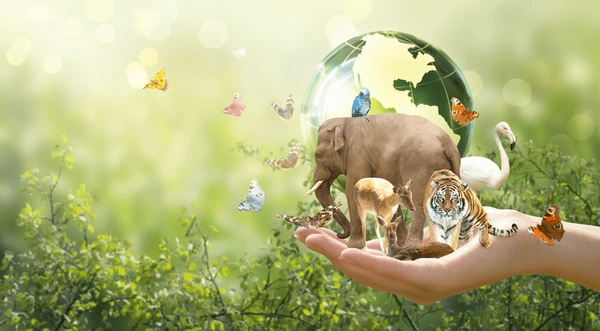

Metas
Metas Sobre a vida terrestre
A vida terrestre engloba todas as formas de vida que habitam a superfície da Terra, como plantas, animais, micro-organismos e seres humanos. Esses seres vivem em diversos ecossistemas, como florestas, desertos, montanhas e campos
Ela é essencial para o equilíbrio do planeta, pois regula o clima, purifica o ar, mantém os solos férteis, conserva a água e abriga a biodiversidade. No entanto, enfrenta várias ameaças, como o desmatamento, a poluição, as mudanças climáticas e a destruição de habitats naturais.
Proteger a vida terrestre é um dos Objetivos de Desenvolvimento Sustentável da ONU (ODS 15), que busca conservar os ecossistemas, restaurar áreas degradadas e promover o uso sustentável dos recursos naturais.
Metas Garantir a conservação, recuperação e uso sustentável dos ecossistemas até 2020, especialmente florestas, pântanos, montanhas e zonas áridas
Promover o manejo sustentável de todos os tipos de florestas, restaurar áreas degradadas e aumentar o reflorestamento globalmente.
Lutar contra a desertificação e restaurar terras afetadas pela degradação e secas.
Lutar contra a desertificação e restaurar terras afetadas pela degradação e secas.
Assegurar a conservação dos ecossistemas de montanha, incluindo sua biodiversidade.
Tomar medidas urgentes para reduzir a degradação dos habitats naturais, frear a perda de biodiversidade e proteger espécies ameaçadas.
.png) Problemas que o ODS 15 combate
Problemas que o ODS 15 combate Desmatamento
Perda de biodiversidade
Degradação do solo
Caça e tráfico de animais silvestres
Extinção de espécies
Mudanças climáticas que afetam ecossistemas